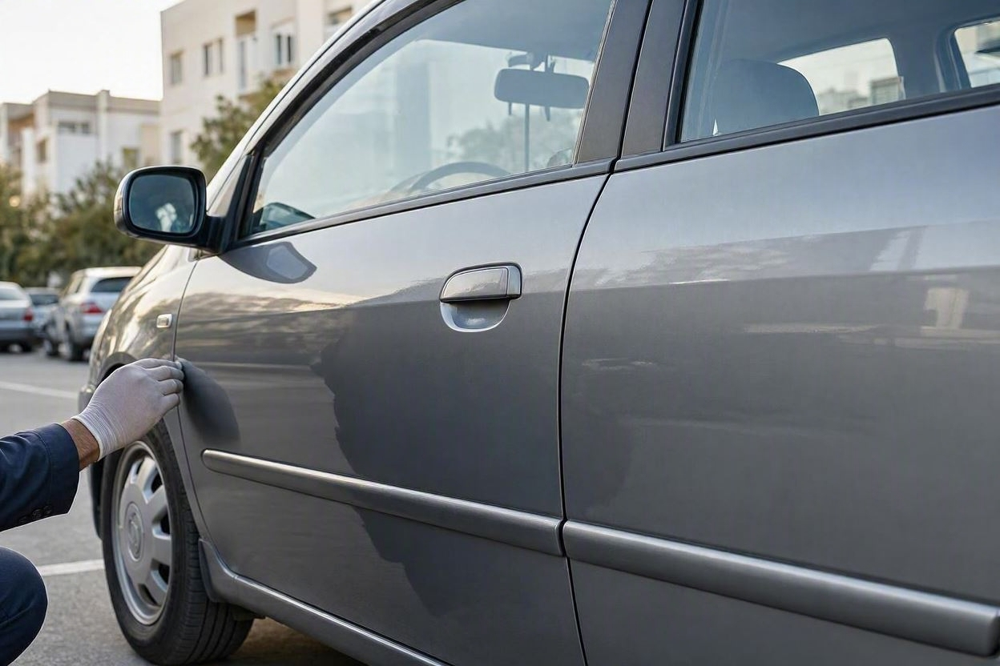
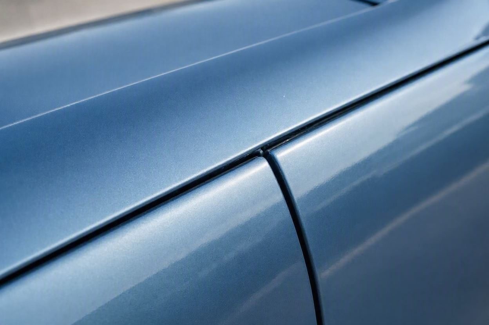
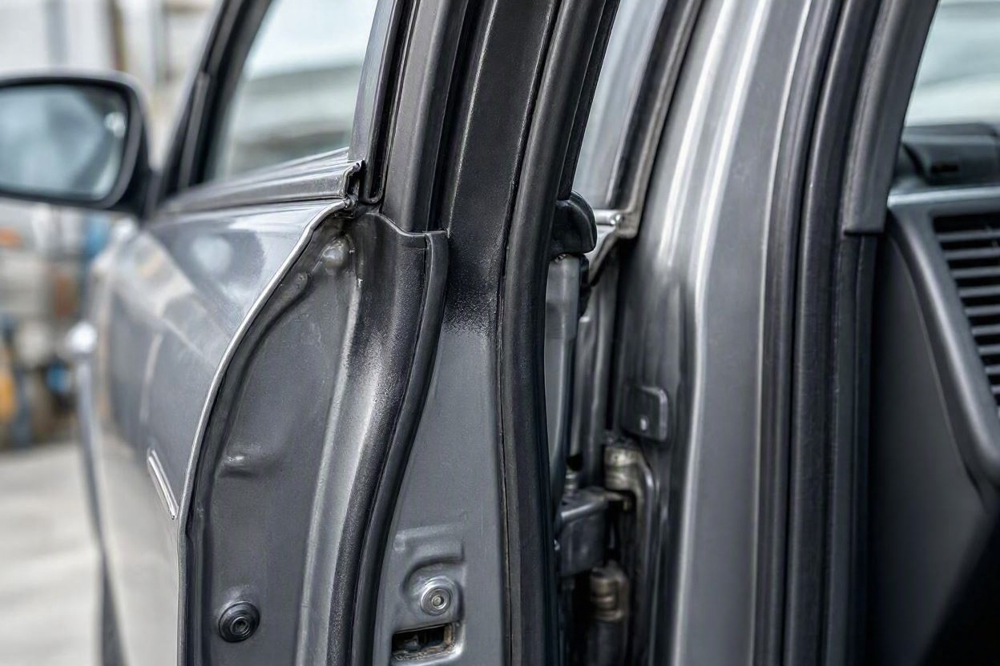
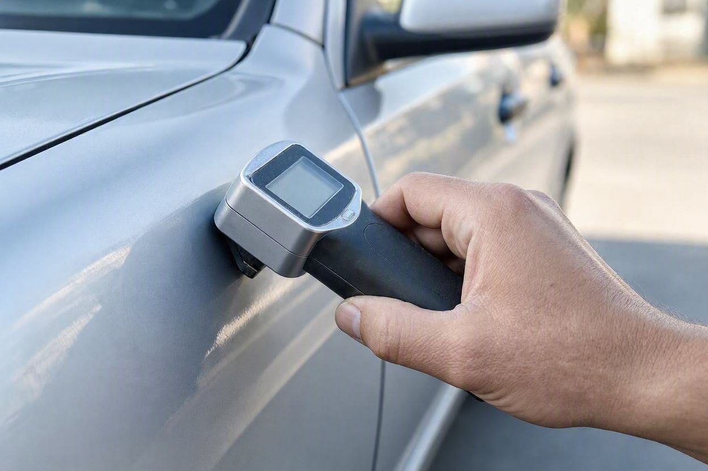

انواع رنگشدگی خودرو: از یک لکه رنگ تا دوررنگ و تمامرنگ
فروشنده میگوید «فقط یه لکه رنگ داره» و شما نمیدانید یعنی یک خط و خش ساده یا نشانه یک تصادف بزرگ. تفاوت این دو، همان چیزی است که سرنوشت معامله را مشخص میکند.
وقتی برای خرید یک خودروی دست دوم میروید، کلمه «رنگ» را با لحنهای مختلف میشنوید: لکه رنگ، صافکاری، دوررنگ، تمامرنگ. مشکل اینجاست که این کلمهها برای خیلی از خریدارها یک معنی دارند، در حالی که هرکدام سطح متفاوتی از کار روی بدنه را نشان میدهند و اثر متفاوتی روی قیمت و ریسک معامله میگذارند. اگر میخواهید پیش از تصمیم، وضعیت واقعی بدنه برایتان روشن شود، کارماچک دقیقاً همین سطحها را مشخص میکند. در این مقاله این اصطلاحها را از ساده به جدی معنی میکنیم و میگوییم در هر سطح، خرید منطقی است یا نه.
رنگشدگی خودرو یک طیف است، نه یک وضعیت واحد. لکه رنگ و رنگ یک قطعه بهخاطر خط و خش کمریسکاند و با قیمت درست خرید منطقی است. دوررنگ (رنگ چند قطعه کنار هم) نیاز به بررسی دلیل دارد. تمامرنگ (رنگ کل بدنه) پرریسکترین حالت است، چون میتواند تصادف سنگین یا ایراد شاسی را بپوشاند و معمولاً فقط با افت قیمت زیاد و کارشناسی کامل ارزش دارد.
- رنگشدگی سطح دارد: از لکه رنگ جزئی تا تمامرنگ بدنه.
- هرچه گستردگی رنگ بیشتر باشد، احتمال پنهانشدن یک ایراد جدیتر بالاتر میرود.
- دوررنگ یعنی چند قطعه کنار هم رنگ شدهاند و باید دلیلش روشن شود.
- تمامرنگ همیشه بد نیست، اما بیشترین احتمال پوشاندن تصادف یا شاسی را دارد.
- سطح رنگ فقط با قیمت متناسب و بررسی درست، تبدیل به معامله خوب میشود.
لکه رنگ، دوررنگ و تمامرنگ یعنی چه؟
پیش از هر تصمیمی باید بدانید این اصطلاحها دقیقاً به چه چیزی اشاره دارند. تفاوت آنها در گستردگی رنگ و تعداد قطعاتی است که از رنگ کارخانه فاصله گرفتهاند.
لکه رنگ یعنی یک بخش کوچک از یک قطعه، مثل گوشه گلگیر یا لبه درب، رنگ خورده است. دوررنگ یعنی چند قطعه کنار هم، مثل گلگیر و درب و رکاب یک سمت، با هم رنگ شدهاند. تمامرنگ یعنی عملاً کل بدنه دوباره رنگ شده است. هرچه از لکه رنگ به سمت تمامرنگ میرویم، هم گستردگی کار بیشتر میشود و هم این احتمال که رنگ برای پنهان کردن یک آسیب جدی انجام شده باشد.
یک اصطلاح دیگر هم زیاد میشنوید: آبرنگ. آبرنگ به رنگی گفته میشود که خیلی سطحی و برای پوشاندن خط و خش جزئی زده شده و ضخامت زیادی ندارد. آبرنگ معمولاً از رنگ کامل یک قطعه کماهمیتتر است، اما باز هم باید در قیمت دیده شود.
سطح اول: لکه رنگ و لکهگیری
لکهگیری کمریسکترین نوع رنگشدگی است. در این حالت فقط یک بخش کوچک از قطعه رنگ شده، نه کل آن. دلیل رایجش خراش پارکینگی، برخورد جزئی یا لکهای است که با پولیش پاک نشده.
در بیشتر موارد لکه رنگ روی یک قطعه بیرونی مثل گلگیر یا درب، نشانه تصادف مهم نیست و بیشتر یک موضوع ظاهری است. نکتهای که باید چک کنید کیفیت کار است: اگر لبه لکه معلوم باشد، سطح زبر باشد یا رنگ با بقیه قطعه اختلاف داشته باشد، یعنی کار تمیز انجام نشده و همین میتواند در فروش بعدی به چشم بیاید.
سطح دوم: رنگ یک یا چند قطعه
یک پله بالاتر، رنگ کامل یک قطعه است، مثل رنگشدن کل درب یا کل گلگیر. اینجا دیگر با یک لکه ساده طرف نیستید و معمولاً پای صافکاری یا یک برخورد جدیتر در میان بوده است.
رنگ یک قطعه، اگر همان یک قطعه باشد و بقیه بدنه سالم بماند، هنوز میتواند معامله قابل قبولی باشد. چیزی که اهمیت پیدا میکند این است که رنگ روی قطعه سازهای است یا قطعه بیرونی. رنگ گلگیر یا درب یک موضوع است، اما رنگ روی سرشاسی، ستون یا سقف موضوع کاملاً متفاوتی است و به سازه بدنه مربوط میشود.
وقتی تعداد قطعات رنگشده بیشتر میشود، باید ببینید این قطعهها کنار هماند یا پراکنده. چند قطعه پراکنده در نقاط مختلف بدنه معمولاً یعنی چند برخورد جدا در طول عمر خودرو، ولی چند قطعه کنار هم ما را به سطح بعدی میرساند: دوررنگ.
سطح سوم: دوررنگ چیست و چرا مهم است؟
دوررنگ یعنی چند قطعه مجاور، مثل گلگیر جلو، درب جلو و درب عقب یک سمت، با هم رنگ شدهاند. علت این کار معمولاً یک برخورد است که روی چند قطعه پشتسرهم اثر گذاشته یا تعمیرکار خواسته اختلاف رنگ بین قطعه نو و قطعههای کناری دیده نشود.
دوررنگ بهخودیخود فاجعه نیست، اما یک سیگنال است. باید بفهمید آن ضربه فقط ظاهر را درگیر کرده یا به قطعات زیرین و سازه هم رسیده است. یک دوررنگ سمت راننده که فقط گلگیر و درب را گرفته با دوررنگی که تا رکاب و ستون ادامه دارد، دو داستان کاملاً متفاوتاند.
اینجا همان جایی است که سطح رنگ مستقیم روی قیمت اثر میگذارد. برای اینکه بدانید این میزان رنگ چقدر باید از قیمت کم کند، دیدن نحوه محاسبه افت قیمت خودرو تصادفی کمک میکند تا عدد فروشنده را با منطق بازار بسنجید.

پیش از معامله، سطح رنگ را روشن کنید
تشخیص اینکه رنگ یک خودرو در حد لکه است یا دوررنگ و تمامرنگ، تفاوت زیادی در قیمت و ریسک دارد. بررسی تخصصی این ابهام را کم میکند.
شروع کارشناسی خودروسطح چهارم: تمامرنگ، پرریسکترین حالت
تمامرنگ یعنی کل بدنه خودرو دوباره رنگ شده است. این کار همیشه به معنی تصادف سنگین نیست؛ گاهی برای یکدست کردن رنگ یک خودروی قدیمی که آفتابسوخته یا پوسته پوسته شده انجام میشود. اما مشکل اینجاست که تمامرنگ بیشترین قابلیت را برای پنهان کردن یک ایراد جدی دارد.
وقتی کل بدنه یکدست رنگ میشود، دیگر نمیتوان از روی اختلاف رنگ بین قطعات فهمید کجا ضربه خورده است. برای همین تمامرنگ میتواند رد یک تصادف بزرگ، صافکاری گسترده یا حتی ایراد شاسی را بپوشاند. یک تمامرنگ که برای پنهان کردن آسیب سازهای زده شده، هم ایمنی را پایین میآورد و هم ارزش خودرو را بهشدت کم میکند.
به همین دلیل در خودروی تمامرنگ، بررسی شاسی و سازه اهمیت دوچندان پیدا میکند. اگر با چنین خودرویی روبهرو شدید، پیش از هر تصمیم، نشانههای تشخیص شاسی ضربه خورده خودرو را جدی بگیرید، چون رنگ یکدست بدنه میتواند این نشانهها را از چشم پنهان کند.

جدول مقایسه سطحهای رنگشدگی
این جدول کمک میکند سطحها را کنار هم ببینید. توجه کنید که ریسک واقعی هر خودرو به وضعیت خودش بستگی دارد و این جدول فقط یک قاب کلی برای مقایسه است.
| سطح رنگشدگی | یعنی چه | دلیل رایج | ریسک | تصمیم خرید |
|---|---|---|---|---|
| لکه رنگ و آبرنگ | بخش کوچکی از یک قطعه | خط و خش، خراش پارکینگی | پایین | با قیمت درست، منطقی |
| رنگ یک قطعه | کل یک قطعه بیرونی | فرورفتگی یا برخورد جزئی | پایین تا متوسط | مشروط به سالم بودن سازه |
| دوررنگ | چند قطعه کنار هم | برخورد یک سمت خودرو | متوسط تا بالا | فقط با بررسی دلیل و افت قیمت |
| تمامرنگ | کل بدنه خودرو | یکدستسازی یا پوشاندن تصادف | بالا | فقط با کارشناسی کامل و افت زیاد |
چطور بفهمیم خودرو در کدام سطح است؟
برای اینکه بفهمید با کدام سطح رنگ روبهرو هستید، باید هم گستردگی و هم محل رنگ را بسنجید. این مراحل کمک میکنند:
- بررسی چشمی کل بدنه:خودرو را در نور روز و از چند زاویه نگاه کنید تا اختلاف رنگ و بافت میان قطعات دیده شود.
- کنترل درزها و لاستیک دور درب:پاشش رنگ یا رد نوار چسب روی درزها نشان میدهد قطعه رنگ شده است.
- سنجش ضخامت رنگ:با دستگاه رنگسنج، ضخامت رنگ هر قطعه اندازه گرفته میشود تا گستردگی واقعی رنگ مشخص شود.
- بررسی سازه و شاسی:ستونها، رکاب، سرشاسی و درزهای زیر بدنه برای نشانه ضربه، جوش یا صافکاری کنترل میشوند.

بخشی از این نشانهها با چشم قابل تشخیص است، اما جدا کردن یک آبرنگ سطحی از یک صافکاری سنگین یا فهمیدن اینکه تمامرنگ چه چیزی را پوشانده، معمولاً به ابزار و تجربه کارشناس نیاز دارد. اگر بخواهید کل روند خرید را مرحلهبهمرحله پیش ببرید، چک لیست خرید خودرو دست دوم نقطه شروع خوبی است.
اشتباههای رایج خریدار درباره رنگ
خیلی از تصمیمهای اشتباه بهخاطر برداشت غلط از کلمه رنگ گرفته میشود. رایجترینها:
- رد کردن یک خودروی سالم فقط بهخاطر یک لکه رنگ جزئی و منطقی.
- پذیرفتن تمامرنگ بدون پرسیدن دلیل، فقط چون ظاهر خودرو تمیز و یکدست است.
- یکی دانستن آبرنگ سطحی با رنگ کامل قطعه و برعکس.
- توجه به وجود رنگ، اما بیتوجهی به محل آن؛ رنگ ستون و سقف با رنگ گلگیر فرق دارد.
- خرید خودروی رنگشده با قیمت خودروی بیرنگ و جبراننشدن افت.
برای فهم کاملتر اینکه در چه شرایطی رنگشدگی به معامله لطمه میزند و کِی قابل قبول است، میتوانید مطلب خودرو رنگ شده ارزش خرید دارد یا نه را هم بخوانید.
کارماچک اینجا چه کمکی میکند
کارماچک یک ارائهدهنده خدمات کارشناسی خودرو در ایران است و بدنه، رنگ، سازه و عوامل مؤثر بر ارزش معامله را بررسی میکند. فقط ایراد خودرو را شناسایی نمیکنیم؛ اثر آن روی هزینه تعمیر و ارزش واقعی معامله را هم مشخص میکنیم. اگر میخواهید بدانید رنگ این خودرو دقیقاً در چه سطحی است و چقدر باید روی قیمت اثر بگذارد، میتوانید قیمتگذاری خودرو و کارشناسی رنگ و بدنه را کنار هم ببینید.
جمعبندی
ماشین رنگشده یک دسته یکپارچه نیست. یک لکه رنگ کوچک با تمامرنگ کل بدنه از نظر ریسک و قیمت زمین تا آسمان فرق دارد. کلید تصمیم درست این است که بهجای ترس از خود کلمه رنگ، سطح، محل و دلیل آن را بشناسید و ببینید قیمت خودرو این افت را جبران میکند یا نه. لکه رنگ و رنگ یک قطعه اغلب قابل قبولاند، دوررنگ نیاز به دقت دارد و تمامرنگ بیشترین احتیاط را میطلبد. یک بررسی درست، تفاوت یک معامله خوب و یک اشتباه پرهزینه را روشن میکند.
قبل از خرید، سطح رنگ و بدنه را مشخص کنید
پیش از پرداخت پول، بگذارید مشخص شود رنگ خودرو در چه حدی است و چه اثری روی ارزش معامله دارد.
ثبت درخواست کارشناسیسؤالات متداول
فرق لکه رنگ با دوررنگ چیست؟
لکه رنگ یعنی فقط بخش کوچکی از یک قطعه رنگ شده، مثل گوشه گلگیر. دوررنگ یعنی چند قطعه مجاور، مثل گلگیر و درب یک سمت، با هم رنگ شدهاند. دوررنگ معمولاً نشانه یک برخورد بزرگتر است و باید دلیل و گستردگی آن دقیقتر بررسی شود، در حالی که لکه رنگ اغلب یک موضوع ظاهری کمریسک است.
خودرو تمامرنگ حتماً تصادفی است؟
نه لزوماً. گاهی تمامرنگ برای یکدست کردن رنگ یک خودروی قدیمی و آفتابسوخته انجام میشود. اما چون تمامرنگ میتواند رد تصادف سنگین یا ایراد شاسی را بپوشاند، همیشه باید سازه و شاسی خودرو جداگانه و با دقت بررسی شود تا مطمئن شوید رنگ فقط ظاهری بوده است.
آبرنگ با رنگ کامل قطعه فرق دارد؟
بله. آبرنگ رنگی سطحی و کمضخامت است که برای پوشاندن خط و خش جزئی زده میشود و معمولاً از رنگ کامل یک قطعه کماهمیتتر است. با این حال کیفیت آبرنگ مهم است؛ اگر بد اجرا شده باشد، در نور و از زاویه دیده میشود و باید در قیمت لحاظ شود.
کدام سطح رنگشدگی بیشترین افت قیمت را دارد؟
هرچه گستردگی رنگ بیشتر و محل آن به سازه نزدیکتر باشد، افت بیشتر است. تمامرنگ و دوررنگی که به ستون و رکاب رسیده، بیشترین افت را دارند، بهویژه اگر همراه با ایراد شاسی باشند. لکه رنگ و رنگ یک قطعه بیرونی معمولاً کمترین اثر را روی قیمت میگذارند. عدد دقیق به وضعیت همان خودرو و قیمت روز بستگی دارد.
با چشم میشود سطح رنگ را تشخیص داد؟
بخشی از نشانهها با چشم قابل دیدن است: اختلاف رنگ، زبری سطح و پاشش رنگ روی درزها. اما تعیین دقیق ضخامت رنگ، جدا کردن آبرنگ از صافکاری سنگین و فهمیدن اینکه تمامرنگ چه چیزی را پوشانده، به دستگاه رنگسنج و تجربه کارشناس نیاز دارد. برای معاملههای مهم، تکیه فقط به بررسی چشمی ریسک دارد.
خرید خودرو دوررنگ اشتباه است؟
نه همیشه. دوررنگ اگر فقط قطعات بیرونی یک سمت را گرفته باشد، سازه سالم باشد و قیمت افت را جبران کند، میتواند معامله منطقی باشد. اشتباه وقتی است که دوررنگ به ستون و رکاب رسیده یا ایراد شاسی را پنهان کرده و قیمت هم مثل خودروی سالم باشد. بررسی دلیل رنگ، نقطه تصمیم است.